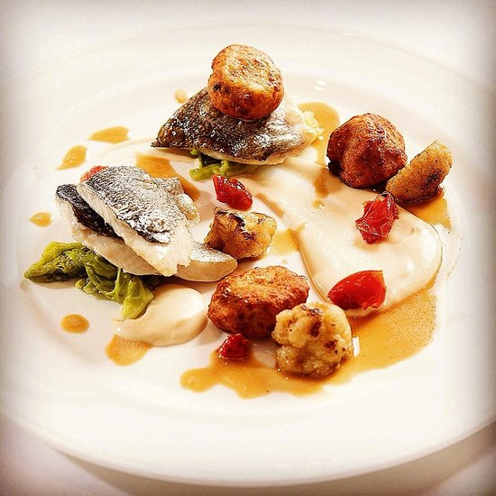
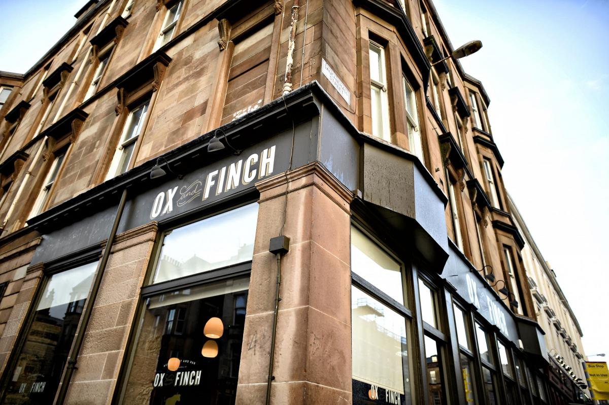
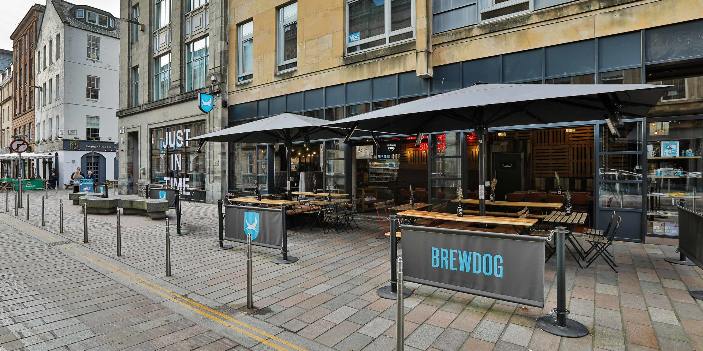
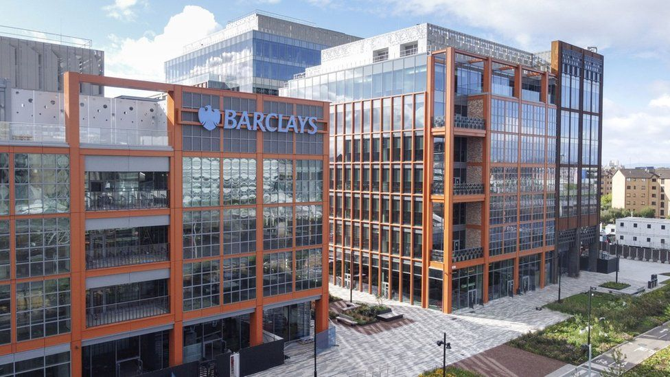
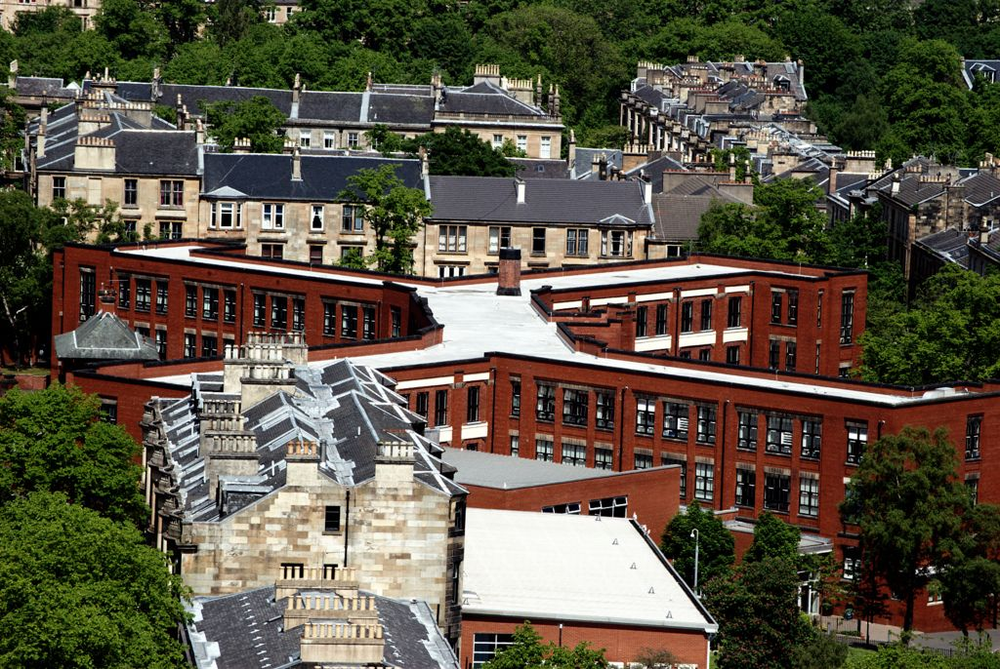

My Experience:
Work Experience:
"I worked at X (a restaurant I won't mention) as a Kitchen Porter. My first ever job, I used to get paid £4.62 an hour. Getting hit by adulthood wasn't fun..."
"I then moved to Ox and Finch as a Kitchen Assistant in September, 2021. I also worked briefly as a waiter/pastry chef there. I really enjoyed my time working there."
"I currently work at BrewDog as a chef, they've got a great atmosphere and the staff I work with are awesome!"
"I am a tech apprentice at Barclays, although I haven't been to the office yet. It's getting me out of my comfort zone, which is always good (eventually)."
Academic Experience:
"I have graduated from Hillhead High School last year, with a total of AAAAAAB at Higher & AA at Advanced Higher (if you don't know what those grades mean, then you should take my word they're kinda a big deal)"
"I'm currently a Multiverse Software Development Apprentice. It's a great opportunity I wanna make the most out of!"